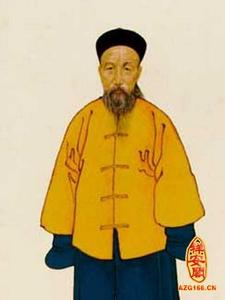

我们在古装神话剧中经常会听到某个“先知”对前来算命的人说：你会在某某时刻遇到你的贵人。而这个贵人会在事业上助你一臂之力。
这里有个问题：贵人到底是什么？我们怎样去寻找我们的贵人。
前几天有个网友来咨询，他很烦恼，因为他竟然也去算命了，算命婆告诉他：大约在他30岁左右，必须找到一个女性贵人，此贵人能助他事业飞黄腾达。
我听到这里，深深的感叹这位神婆的工作实在太轻松了，就这么几句话让这位网友五迷三道的信服了，并支付了100大洋。
为什么这么说呢？我来帮这位网友分析一下：
1、这位网友是ＩＴ人士，今年27,在一家软件公司做项目经理兼主力开发兼客户经理，有时还要兼三陪等等，可谓《前途无量》。
2、网友至今没有女朋友，现在满脸是痘痘（为毛？你懂的）
3、网友打算在30左右开始创业，方向是电商。（我发现好多人创业都往电商走，虽然他们深知玩电商和赌球区别不大）
4、网友性格有点内向，平时很少说话，但凡开口，一般都是经典绝伦的语句。
其实，从以上四点，我基本也可以做出和神婆一样但是却更详细的结论。首先网友是一个具备“成功可能性”的人，其次网友阳气太重需要阴阳协调、性格内向说明人 脉圈一般不会太广，再次，如果网友有创业的想法，那么必先苦其心志、劳其筋骨，但是在当年科技如此发达的年代，很多事情非个人努力就一定能达到，如果此时 有个把“贵人”助其一臂之力，那么必然会事半功倍。从满脸“痘痘”可以判断出，这厮绝对需要一个“背后默默支持他的“女人。
当我把此结论交付给网友验收时，他立即表示下次算命时来照顾我的“生意“。
（二）
其实啊，我们排除其他硬性条件（可控因素）不说，贵人其实是一个软性因素，也就是不可控因素，因为这和你的性格、为人处事方式、三观有着极大的关系。俗话说物以类聚人以群分，你的风格直接决定了你“贵人“的数量和质量。
网上有份资料，据说有专家专门对一小批人做过抽样调查，发现绝大数人认为自己曾经遇到过贵人或者已经遇到了贵人。其中：
1、凡是做到中高级主管或经理的，90%收到过牛人的栽培或点拨
2、自己创业成为大老板的，100%受到过贵人相助
3、官场上走上领导位置的，200%受过贵人提拔（这一条大家懂的）
(三)
网上经常有很多文章讲述关于成功和出身的紧密关系，意思是指：如果没有好的出身，几乎不可能成就事业。
我对此观点一直持“摈弃”的态度。请看我以下分解：
曾国藩，晚晴四大重臣之首。

晚晴四大重臣有哪几个？从我个人的研究来看，这四人是最靠谱的：曾国藩、李鸿章、左宗棠、张之洞
其中：
1、李鸿章—注明的《马关条约》就是他签约的，从此背上了”卖国贼”的名号，事实上李鸿章被逼的成分更多一点，以后有机会我们来讲一讲这位“很努力很牛逼”的重臣。如果没有各种卖国条约，个人认为李鸿章应该也能齐名重臣之首。
2、左宗棠—晚晴时期，湘军重要将领，收复新疆镇压太平天国的大佬便是他。
3、张之洞—晚晴重臣、军机大臣，洋务派改革家，清朝最后一任皇帝溥仪登基时，张之洞被授予太子太保衔。据说溥仪的生父载沣想杀袁世凯，就是被张之洞阻止的。
最后一位就是本文中要稍加详细讲的：曾国藩。
曾国藩是湘军之首，晚晴重臣，具有后人给予的“修身齐家治国中华千古第一完人”。大家试想一下：
1、第一
2、完人
这企是一般人能懂的境界？
然而，曾国藩身世并不是显贵一族，相反很一般，换到现在也就是一个家里有几分地的湖南乡下小地主，在朝中并没有背景。
那为何曾国藩能到最后位极人臣呢？
据我翻查资料，原来是和一个叫做穆彰阿的贵人是息息相关的。
穆 彰阿:嘉庆年间进士，道光帝时期的重臣，我们对其品格不做评价，因为历史上对穆彰阿大多是差评，譬如诬陷林则徐，签订不平等条约等等。事实上在晚清时期， 很多差评和好评都是随着时事和环境的走向和不断变化的，没有绝对的好评和差评。譬如李鸿章，真的是”坏蛋“？人家只是背黑锅而已（后面有机会再讲）

曾国藩最早的名字叫做曾子城，在他对穆彰阿深入了解后，瞬间做了一个决定—拜穆彰阿的门下。
在当时晚清时期，如果你要上位光凭“考试”是不可能成功的，最多给你封个七品芝麻官。如果要走上仕途的核心，必须找一个”贵人”做靠山，这也叫做押宝。
穆彰阿成了曾国藩押宝之第一人，而且还押对了。
穆 彰阿在第一次和曾国藩相见时，觉得这位湖南乡下人虽然却只有中人之姿，但从曾国藩的谈吐和一些观点来看，一旦其确定一种信念，产生一种情感，便会终生不 渝；而那些出自官宦之家，生于通都大邑的阔少爷，尽管说起话来滔滔不绝，发起誓来指天画地，但他们的感情，大多来得快，去得也快，表演的成分多，实在的东 西少。
在经过一番讨论后，穆彰阿表示很赏识曾国藩，并把其原名：“子城”修改为“国藩”。
从此，一代枭雄正式诞生了。
曾国藩受到咸丰帝的赏识从历史记载来看，完全是穆彰阿的一手制造，大家看以下一个记载：
穆彰阿的鼎盛时期是道光年间，到了咸丰帝即位后，对穆彰阿横竖看不顺眼。穆彰阿深知大势已去，于是便开始培植自己的心腹入朝，其中首当其冲的就是这位曾国藩。
当时曾国藩拜在穆彰阿石榴裙下时仅仅是一个“检讨”官职，属于翰林院编修下的官职。
一日穆彰阿打算正式向皇帝推荐曾国藩，于是告诉曾国藩必须熟读四书五经。
在古代我们知道，有才华的标准除了武将有战功，文将基本上就是对典籍有着“倒背如流“的能力。虽然这在现代的我们听起来简直无法直视，但是在当时这是”有文化、有才华“的标准。
而曾国藩时任翰林院的“检讨“，一没实战经验二没名声，如果要推举他，只有从他“善于留神、过目不忘”入手，不然呢？
咸丰帝也是个“试才”高手，听了穆彰阿的推荐后并没有立刻把曾国藩喊来当场对峙其“超凡记忆力”，而是让穆彰阿先行退下。
穆彰阿回府后很后悔，因为他对曾国藩的推荐仅仅是“过目不忘”，如果换在现代，那顶多是个“速记能手”，给个秘书做做已经算皇帝领悟的很透彻了。
但是正向上面我们所说的古代识才传统，咸丰帝恰恰对“过目不忘”者认为是有真才实学的人。于是打算试一试曾国藩。
用的什么办法呢？咸丰帝用的办法还是很有趣的。
1、首先命人把曾国藩喊道中和殿候命
2、去过故宫参观的朋友应该知道，中和殿是北京故宫外朝三大殿之一，位于太和殿、保和殿之间，是皇帝举行大典之前休息的地方，建筑面积580平米。按北京四环的房价，怎么也得两千多万。。。。
3、过了很久也没人喊曾国藩面圣。
4、曾国藩站的腰酸背痛，于是只能在大殿中来回走来走去。
5、这才见到大殿四壁挂着大清历代先皇的圣训,由于心神不定,他也无心细看。后来,太监终于来了,对他说:”皇上今日没空,命你明日再来。
曾国藩失落的回到穆彰阿住所汇报。穆彰阿听了过程后,沉思良久,突然问：大殿四壁挂着大清历代先皇的圣训。你记住了吗？
曾国藩摇头，在那种环境下，谁还有心思看这个啊。
事实证明，说到“善于留神、过目不忘”， 穆彰阿才是这方面的顶尖高手，也许在他推荐曾国藩时把他自己的所长呈现了出来。
穆彰阿断定，挂在四壁的先皇圣训一定是咸丰帝为了考验曾国藩“善于留神、过目不忘”的能力，必定咸丰帝会在事后再一次召见曾国藩。
恰恰在这时，宫中有个总管太监来求穆彰阿办事，穆彰阿灵机一动，一方面立刻答应太监的请求，另一方面以翰林院要编写一份歌颂先皇丰功伟绩的著作，需要用到先皇圣训的内容，希望太监去中和殿把它抄下来送给他。
当晚，穆彰阿把拿到的手抄本圣训交给曾国藩。
果然不出所料，第二天咸丰帝正式召见了曾国藩，并问到了昨日挂在墙壁上的先皇圣训，结果曾国藩如行云流水般的倒背如流，惊诧的咸丰帝立马对曾国藩委以重任，几日后曾国藩被任命为吏部右侍郎。
从此，属于曾国藩飞黄腾达的年代正式来临。甚至到最后，李鸿章的发迹也是因为曾国藩身染“眩晕、腹泻、呕吐”症状后，接替了曾国藩的直隶总督后才开始的。
其实，我们通观曾国藩的生平，我们会发现其是一个非常努力求上进的人，譬如在文学方面：他创立了晚清古文的湘乡派，还著有《求阙斋文集》、《诗集》、《读书录》、《日记》、《奏议》、《家书》、《家训》及《经史百家杂钞》、《十八家诗钞》等不下百数十卷
在人际关系处理上，大家可以去网上搜索一下曾国藩的格言十二首，摘录其经典要素如下：
1、凡事不可占人半点便宜。不可轻取人财
2、居官以耐烦为第一要义
3、功不必自己出，名不必自己成
4、功成身退，愈急愈好
（四）
看到这，大家也许会认为曾国藩的运气之佳不是一般人能及，因为换做我们如果穿越到那个时代，很可能穆彰阿连正眼都不会瞧我们。
运气确实是一个很重要的方面，甚至连曾国藩自己到后期也留下的六字“真言“：不信书，信运气。
这 六个字其实也是曾国藩对自己的成长道路的一个总结，果断是“运气“成分更多一点，而他的运气大部分是关键时刻的”贵人”相助。曾国藩从历史记载是个极为努 力之人，尤其到了晚期他看不惯官场的腐朽和暮气沉沉，想要通过自己的努力警醒咸丰帝，在一定程度上改变现状。但这时，“运气”再一次主导了曾国藩，在穆彰 阿被罢黜后曾国藩在朝廷就越来越被孤立，甚至到后来被朝廷派去江西主持乡试。直至最后太平天国起义崛起，清朝绿营兵不堪一击，曾国藩才因此再被重用，建立 著名了“湘军”。
所以，引领曾国藩的两个贵人：
1、穆彰阿—这是一个现实世界的贵人，往往需要靠自己的努力实现可遇可求。在这个层面，努力比运气更重要，如果没有一定的努力积累形成才华的外显，那么穆彰阿根本不会赏识曾国藩
2、太平天国—-从一定意义上，天平天国的崛起为当时已经落魄的曾国藩创造了东山再起的环境。因此这是时事背景造成就的一个“环境贵人”。
其中，后者可遇不可求。
对于天时、地利、人和。我们往往能够通过努力抓住的是“人和”。
这里的“人”，在一定意义上是指的“贵人”。于是我们的目标就很明确了，不管我们怎么埋头苦干，最后拽也要拽个“贵人“出来。我们要保证永远不是”一个人在战斗“，光凭我们一个人的努力绝对不可能成功。
如果大家下过象棋，一定会知道一个很传统的三部曲：
1、当头炮。—-炮需要“炮架子“才能发挥作用（这里指的就是贵人）
2、马来跳—–当你通过努力加上贵人相助后，接下来就需要进行一定的运作、布局，把一切飘忽不定的因素归为可控范畴
3、三步不出车：臭棋。——充分发挥你的才能和主观能动性，用白话讲：一切都是干。 在当今互联网如此发达的年代，等到你一切都准备好才进入市场，黄花菜都凉了。
好了，本文暂时讲完。不管在何种阶段的你准备好了吗？知道下一步该怎么走了吗？
--------------------------------------------------
【你如果不爱读书、不爱看新闻、不爱学习，没关系。我来做你的"陪读郎"】
奴隶我的方式：请关注微信订阅号：程序员在囧途。
每天讲故事、讲商业模式、讲技术给你听。